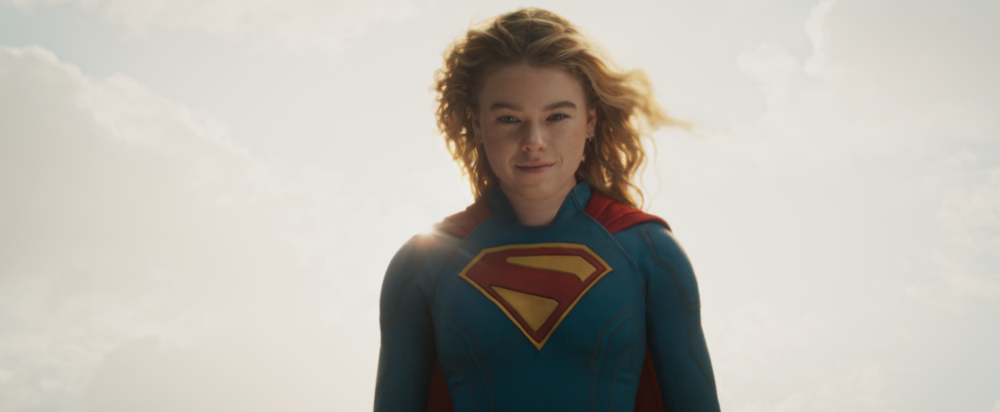

Críticas
Supergirl: A Avalanche de Reclamações da DC
Apesar de ter batido recordes de bilheteria, a nova superprodução da DC enfrentou uma avalanche de reclamações assim que estreou nas telonas.
O vilão principal foi duramente atacado por uma grande parte dos fãs, que o compararam a uma versão sem graça do Coringa de Jared Leto.
A atuação de Milly Alcock é um dos poucos pontos elogiados no filme, que continua em cartaz no momento.
Letterboxd: 3.1 | Rotten Tomatoes: 55%